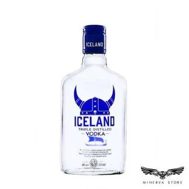

PROFILE |
|

|
Nama : Adhytia Rachman Kelas : IF - 7 NIM : 10122259 ~ AKU INGIN BISA TERBANG DAN MENJADI KETUA PARTAI PDIP |
PROFILE |
|
|
|
Nama : Adhytia Rachman Kelas : IF - 7 NIM : 10122259 ~ AKU INGIN BISA TERBANG DAN MENJADI KETUA PARTAI PDIP |
Puan Maharani Nakshatra Kusyala Devi, lahir 6 September 1973 adalah politikus Partai Demokrasi Indonesia Perjuangan (PDI-P) yang kini menjabat sebagai Ketua Dewan Perwakilan Rakyat Republik Indonesia (Ketua DPR RI) periode 2019–2024.
Johnny sins atau yang kerap di sapa johny ialah aktor ber kebangsaan Amerika yang sangat terkenal dan melegenda, bakat ber-akting dia sudah tidak bisa diragukan lagi dia bisa menjadi pemadam kebakaran,polisi,dokter, tukang bangunan dll.
Fajar memiliki nama asli Fajar Labatjo, namun lebih dikenal dengan julukan sadboy. Julukan tersebut disematkan lantaran kisah percintaan monyetnya yang kandas. Fajar menceritakan percintaannya yang putus itu sambil menangis. Istilah ini tak hanya disematkan untuk laki-laki saja, namun bisa disematkan kepada perempuan.
Bababyo Uyauya Poh, Babayo Uyauya Poh,Bababyo Uyauya Poh, Babayo Uyauya Poh Bababyo Uyauya Poh, Babayo Uyauya Poh Bababyo Uyauya Poh, Babayo Uyauya Poh Bababyo Uyauya Poh, Babayo Uyauya Poh Bababyo Uyauya Poh, Babayo Uyauya Poh.
Bababyo Uyauya Poh, Babayo Uyauya Poh Bababyo Uyauya Poh, Babayo Uyauya Poh Bababyo Uyauya Poh, Babayo Uyauya Poh Bababyo Uyauya Poh, Babayo Uyauya Poh Bababyo Uyauya Poh, Babayo Uyauya Poh Bababyo Uyauya Poh, Babayo Uyauya Poh Bababyo Uyauya Poh, Babayo Uyauya Poh Bababyo Uyauya Poh, Babayo Uyauya Poh.
Jack Daniel's adalah satu-satunya Tennessee Whiskey, yang arangnya lunak. Itu kemudian disimpan di tong buatan perusahaan sendiri. Jack Daniel's memiliki aroma vanilla, oak panggang dan karamel yang halus.
Captain Morgan merupakan merk minuman beralkohol yang berbahan dasar rum. Minuman beralkohol ini terbuat dari proses fermentasi dan distalasi air tebu, kemudian dimatangkan dalam tong dengan bahan kayu sampai minuman ini terlihat berwarna emas

Iceland Vodka merupakan vodka buatan Indonesia yang diproduksi di Bali dan memiliki ciri khas rasa yang clean dan murni. Iceland Vodka merupakan minuman dari biji – bijian terbaik di Bali. Salah satu bahan baku utamanya adalah air yang diambil dari sumber air murni.